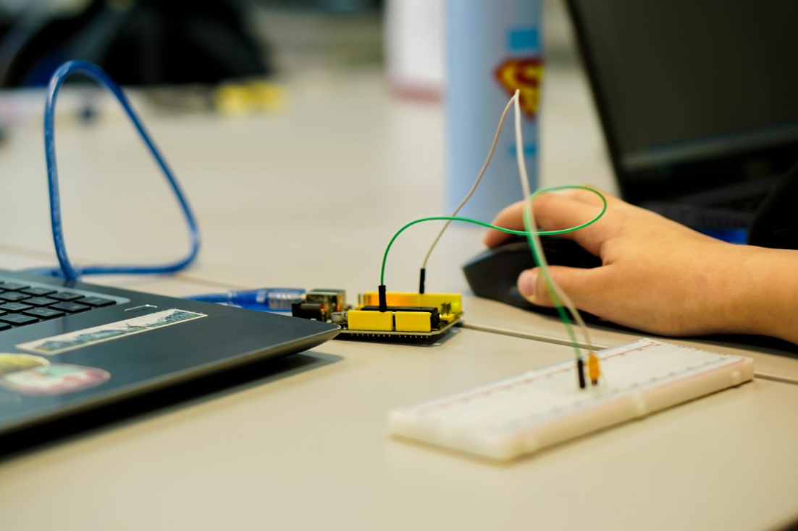
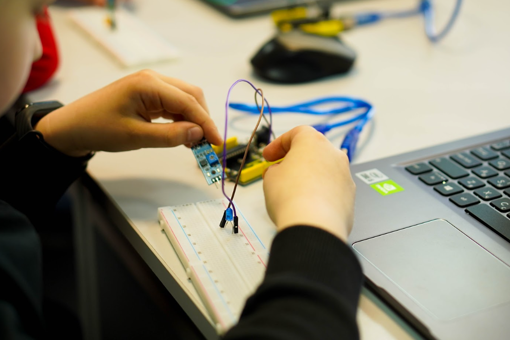
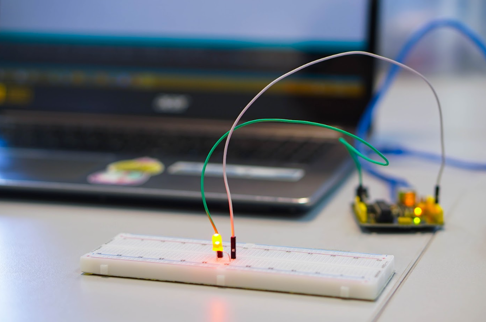
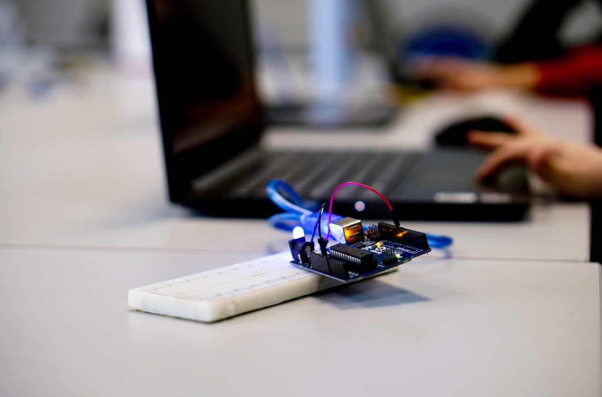

електроніка
Стенди з аналогової та цифрової електроніки
Для вивчення сигналів, датчиків, логічних елементів, підсилювачів, фільтрів, живлення, вимірювань і базових схемотехнічних принципів.

Навчальні стенди та методички для інженерної освіти
Каніфоль створює навчальні стенди для студентів інженерних спеціальностей: електроніка, мікроконтролери, автоматизація, робототехніка, вимірювання та вбудовані системи. Разом зі стендом ми готуємо методички, лабораторні завдання, схеми підключення, контрольні питання і матеріали для викладача.
Концепція
Навчальний стенд має бути не просто красивою коробкою з кнопками. Він повинен пояснювати тему, витримувати багато підключень, бути безпечним для аудиторії та давати студенту відчуття реального інженерного експерименту.
Ми продумуємо весь шлях: що студент бачить на панелі, які точки вимірює, які помилки може зробити, що має зафіксувати в звіті і як викладачу швидко перевірити результат. Тому разом з обладнанням ідуть методичні матеріали, а не просто схема.

Стенди
Стенд може бути модульним, настільним, переносним або стаціонарним. Ми підбираємо формат під аудиторію, кількість студентів, бюджет, теми курсу та рівень підготовки.

Для вивчення сигналів, датчиків, логічних елементів, підсилювачів, фільтрів, живлення, вимірювань і базових схемотехнічних принципів.
Плати, периферія, інтерфейси, завдання з прошивками, приклади коду, підключення дисплеїв, сенсорів, приводів і модулів зв'язку.
Навчальні моделі для регулювання, сенсорики, виконавчих механізмів, логіки керування, зняття характеристик і тестування алгоритмів.
Стенди для дослідження руху, приводів, шасі, маніпуляторів, датчиків положення, керування моторами та взаємодії механіки з кодом.
Методички
Методичні матеріали ми пишемо так, щоб студент не губився на першому підключенні, а викладач міг швидко провести заняття, пояснити логіку роботи та оцінити результат.
Коротко пояснюємо фізику процесу, принцип роботи схеми або алгоритму, ключові формули, типові помилки та очікувані результати.
Даємо порядок підключення, точки вимірювання, таблиці для даних, контрольні дії, місця для графіків і висновків.
Базові вправи для першого знайомства, додаткові задачі для сильніших студентів і дослідницькі питання для курсових або проєктів.
Орієнтовні відповіді, критерії оцінювання, рекомендації щодо проведення заняття, список комплектуючих і сценарії демонстрацій.
Візуально

Підхід
Визначаємо, які теми треба закрити, скільки лабораторних потрібно, який рівень студентів і які навички мають з'явитися після курсу.
Підбираємо модулі, схеми, корпус, захист, індикацію, точки вимірювання, сценарії використання та зручність обслуговування.
Створюємо лабораторні роботи, інструкції, завдання, контрольні питання, критерії оцінювання і матеріали для пояснення теми.
Перевіряємо, чи стенд зрозумілий, стабільний, безпечний, зручний для групи і чи дає студенту правильний навчальний досвід.
Що можна замовити
Житомир
Ми працюємо в Житомирі, на базі інженерного середовища Житомирської політехніки. Тут тестуємо ідеї, збираємо навчальні макети, готуємо методички та перевіряємо, чи зручно студентам працювати зі стендами на реальних лабораторних.
вул. Чуднівська, 103, м. Житомир, Житомирська область, 10005
Навчальні стенди, методички, лабораторні комплекти та інженерні прототипи створюються поруч із тими, хто буде ними користуватись.
Донати допоможуть нам купувати компоненти, плати, датчики, інструменти та матеріали для нових навчальних стендів.
Підтримати донатом Донат відкриється через Donatello у новій вкладці.Контакт
Напишіть тему дисципліни, кількість лабораторних, бажаний рівень складності та що вже є в аудиторії. Ми підготуємо концепцію рішення.